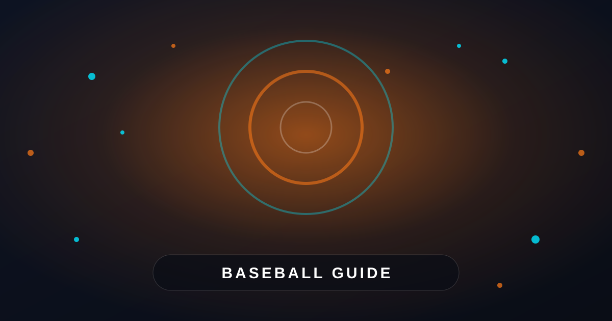

Build your routine around baseball demands
A useful baseball workout routine should improve the skills that appear repeatedly during games: sprinting, rotating, throwing, stopping, and recovering between efforts. Instead of training like a bodybuilder or long-distance runner, focus on athletic strength and controlled power. Your plan should include lower-body strength, upper-body stability, core rotation, speed work, and mobility.
Start each session with 8 to 12 minutes of preparation. Jog lightly, move through leg swings and arm circles, then add exercises such as walking lunges, band pull-aparts, glute bridges, and inchworms. Finish the warm-up with two or three short accelerations or medicine ball movements. You should feel ready to train, not tired before the main work begins.
Train for the actions baseball requires: accelerate quickly, produce force safely, and recover well enough to repeat quality efforts.
Use a simple weekly training schedule
Most players can make steady progress with three strength or power sessions and two speed or conditioning sessions each week. Leave at least one easier day between demanding lower-body workouts. Young athletes should prioritize coaching, technique, and recovery over lifting heavy weights, while experienced players can gradually increase resistance.
A practical weekly structure is strength on Monday, speed and agility on Tuesday, recovery or skill work on Wednesday, strength and power on Thursday, conditioning on Friday, and rest on the weekend. Adjust the schedule around games, practices, school, and travel. During a busy season, reduce workout volume rather than trying to maintain an off-season workload.
Track a few simple details after every session: exercises completed, sets and repetitions, effort level, soreness, and sleep quality. If your throwing feels unusually difficult, your sprint times slow down, or soreness lasts more than two days, reduce the next workout by 20 to 30 percent. Consistency matters more than one exhausting session.
Develop strength and rotational power
Build lower-body strength with movements such as goblet squats, split squats, reverse lunges, Romanian deadlifts, and step-ups. These exercises train the hips and legs to produce force while improving balance between both sides of the body. Perform two to four sets of six to twelve controlled repetitions, keeping one or two good repetitions in reserve.
Add upper-body exercises that support strong, healthy throwing. Rows, push-ups, dumbbell presses, landmine presses, and light face pulls can improve strength without neglecting shoulder control. For every pressing movement, include a pulling movement. Keep your ribs down, avoid shrugging, and stop if an exercise causes sharp pain.
Train baseball power with medicine ball scoop tosses, rotational throws, broad jumps, and carefully performed kettlebell swings. Complete power exercises early in the workout, after warming up, when you are fresh. Use three to five sets of three to six explosive repetitions and rest enough to keep every movement fast. Power training should never become slow, sloppy conditioning.
Improve speed, agility, and conditioning
Speed training works best when repetitions are short and recovery is generous. Begin with 10- to 20-yard accelerations, focusing on a strong forward lean, powerful arm drive, and quick steps. Perform six to ten sprints with 45 to 90 seconds of rest. Stop the session when your speed drops noticeably, because tired sprinting can reinforce poor mechanics.
For baseball agility, practice lateral shuffles, crossover steps, backpedal-to-sprint drills, and short reaction drills. Use a partner, coach, or visual signal to add decision-making. Keep each drill between five and ten seconds, and rest fully between attempts. Change direction by lowering your hips and planting under control instead of reaching with a straight leg.
Conditioning should match the rhythm of baseball. Try eight to twelve rounds of 15-second hard efforts followed by 45 seconds of easy movement, using a bike, jog, hill, or field sprint. You can also use base-running patterns with full recovery. Limit hard conditioning to one or two weekly sessions so it does not interfere with strength, speed, or throwing.
Protect your arm and recover consistently
Arm care belongs in every baseball training plan. Add light band external rotations, scapular wall slides, prone Y and T raises, and controlled shoulder circles two or three times per week. These movements should improve control, not create fatigue. Avoid treating arm-care exercises as a replacement for proper throwing limits and sound pitching mechanics.
Recovery starts with basic habits. Aim for eight or more hours of sleep when possible, drink water throughout the day, and eat a meal containing protein and carbohydrates after demanding training. Spend five to ten minutes on gentle mobility for the hips, ankles, upper back, and shoulders. Light walking on rest days can reduce stiffness without adding significant stress.
Review your routine every four weeks. Increase weight, repetitions, sprint distance, or training complexity gradually, but do not increase everything at once. Pain that changes your movement, persistent swelling, numbness, or loss of throwing velocity deserves attention from a qualified medical professional. For more general athletic skill ideas, read How to Improve Your Basketball Shooting: 7 Simple Tips at https://dhyey.bond/blog/how-to-improve-basketball-shooting/. The movement principles can complement your baseball training while keeping your program well rounded.
See Also
If you enjoyed this Baseball Guide article, check out How to Improve Your Basketball Shooting: 7 Simple Tips for more useful reading.